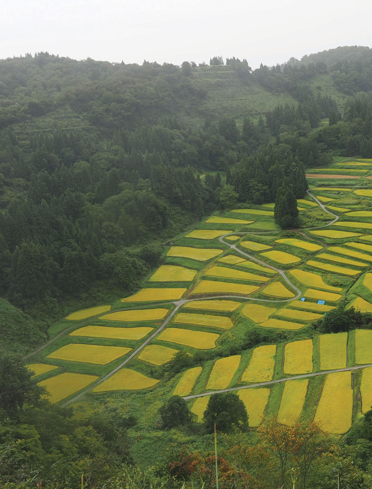

Rice Terrace and Its Conservation by the "Ownership" Program in Japan
Affiliations
- 1 The University of Tokyo
International Terraced Landscapes Alliance Journal volume 1, issue 2, pp. 36–45 (2020) · Cite this article
- 246 views
- 222 downloads
- DOI10.5281/zenodo.7341170

Abstract
Rice terraces, Tanada in Japanese, account for 10% of paddy fields in Japan. Due to its location and situation, they are severely deprived and threatened with decline and extinction. The Japanese government supports the Tanada area through subsidy and promotion programs. The “ownership” program is the typical challenge in the preservation of rice terraces and Ohyama senmaida is one of the front runners. “Owners” from urban areas enjoy the Tanada works and the atmosphere of the Tanada area. This program is a win-win situation between urban and rural people.
Keywords
- tanada
- "ownership" program
1. Introduction
Japan is located in the Far East, and consists of four main islands, four hundred islands where people live and four thousand small and uninhabited islands. The area is 378 thousand square kilometers and the population is 126 million. Of the land use, about 20% is flat land used for urban and rural purposes. Agricultural land is located on the plains and slopes.

Therefore, there are many terraced landscapes. Around the world, terraced land is used for vineyards, orchards, potatoes, etc., but in Japan, terraced landscape consist of mainly rice terraces and is called “Tanada”. This is because “tana” means shelf and the paddy field on the slope looks like a bookshelf.
Then what is the definition of Tanada? In the 20th century, we had no need and we had no definition of Tanada. However, in the year 2000, it is needed. Terraced landscapes have a big handicap in agricultural productivity. And the Japanese government decided to subsidize Tanada. The Ministry of Agriculture, Forestry and Fisheries (MAFF) started to support Tanada and upland crop field in 2000, and then the definition became necessary. MAFF defines Tanada as “paddy field, located in slope and original inclination is 1/20 or steeper”. Based on this definition, there are 221 thousand hectares of Tanada, accounting for 10% of all paddy fields in Japan, and the original slope for 29 thousand hectares of rise fields is 1/6 or steeper.
2. Characteristics of Tanada
Since Tanada is located on a slope, it has various characteristics. Tanaka & Okada (1978) show the following: 1) Narrow catchment area of irrigation water; 2) Wet conditions due to no/less drainage; 3) No/few roads facilitated; 4) Narrow and irregular shaped plot; 5) Less sunlight and less wind, and 6) Long distance between the terraced fields and the farmer’s house. Regarding labor hours, in 1970, 320 hours per 10a ha were calculated for a season in Maruyama Senmaida, while the national average was 190 hours. In addition, in 1970, it took 12.8 hours/10a in the upper part, 24.6 hours/10a in the middle part, and 45.7 hours/10a in the lower part to apply the harvested rice (Nakashima, 1999).
Although Tanada has a great handicap, it also has many functions; 1) good quality of rice (Kitaura et al., 1986); 2) keep water by detour (Senga, 1997); 3) flood control by retaining water (Shimura, 1982; Hayase, 1997); 4) control soil erosion (Nakashima, 1999); 5) provide good landscape and nostalgic scenery (Katsuhara, 1979; Nakashima, 1999). Therefore, we need to preserve and keep Tanada alive. However, the cultivation abandonment has increased, which means the functions decreased. Preserving Tanada also means to keep the very beautiful and valuable scenery.
From the perspective of non-farmers, every Japanese, especially in urban areas, has forgotten the existence of Tanada. Mr. Ishizuka, director of the theater group, was aware of this situation in the 1990s and organized a Tanada tour for urban residents in 1998. Through the efforts of Mr. Nakagoshi, the Tanada Summit began in 1995 and continues to this day. At the same time, the Tanada Supporters’ Network was established in 1995, and MAFF selected Japan’s top 100 Tanada’s in 1999. Also the Rice Terrace Research Association was founded in 1999. With the help of these efforts, the opinion of urban non-farmers gradually changed and they got a good image for Tanada and Tanada rice.
3. Political support
(1) Subsidy As mentioned above, Tanada has a handicap that needs political support. The “Direct payment to the terraced landscape and its guardians” was introduced in 2000. Its purpose is to maintain production in hillside agricultural areas and preserve the environmental function of Tanada.
26,000 farmer groups received subsidies, for an area of 639 thousand hectares in 2020. The distribution is as follows: 301 thousand hectares of paddy fields, 49 thousand hectares of upland crops, 275 thousand hectares of grassland, 13 thousand hectares of pastures. In order to obtain this subsidy, the farmers’ group from the settlement prepares a master plan for future production and strategy including the following activities: protecting abandoned land, maintaining waterways and roads, preserving environmental values, switching to environmentally friendly agriculture, promoting urban-rural partnership, etc.
(2) Related laws The basic law for the promotion of agriculture and rural areas is the Food, Agriculture and Rural Areas Basic Act, enacted in 1999. Many laws for agriculture are embodied in this law. The Landscape Law was enacted in 2004 as an associated law. Based on the Landscape Law, MAFF immediately began to promote agriculture by improving the landscape through Agricultural Promotion with Enhancement of Landscape. In 2019, Tanada Areas Promotion Law was enacted. Based on this law, tanada area can apply to be a designated tanada area. Once designated, the area can take many supporting programs.

4. Enhancement by Designation
World Heritage Sites declared by UNESCO since 1972 are very popular. The number of registered areas is well over a thousand. However, there are very few designations for agricultural areas. Only three rice terraces in China, the Philippines and Indonesia are registered. Learning from this, we started Japan Heritage in 2015. Following the FAO’s Globally Important Agricultural Heritage System in 2002, we launched MAFF’s Japanese Nationally Important Agricultural Heritage System in 2016.
Another support is the designation of “significant cultural landscape” by the Agency for Cultural Affairs. In 2018, 61 sites were designated and many Tanada sites were included. This is only a designation, not a monetary measure. However, people living in the designated areas become proud and have an incentive to preserve the rural landscape.
Also, learning from the competition titled Our village should become more beautiful (“Unser Dorf soll schöner werden”) in Germany, now changed to Our village has a future (“Unser Dorf hat Zukunft”) MAFF is organizing the Binosato competition until 2016. And following the example of The most beautiful villages of France (“Les plus beaux villages de France”) seven leaders of local governments launched the “Most Beautiful Villages in Japan” competition in 2005.
Rural Urban
Want to leave Want to leave Want to improve Want to visit
• Green Tourism • Ownership Program
Owners Urban People Experience

Fee NPO for Consservation managment Rent Fee Help Fee Landowners Supporters Local People
Many Tanada-area municipalities are registered with this consortium. And specifically for Tanada, like ITLA, we have three main organizations, the Rice Terrace Research Association, the Rice Terrace Supporters’ Network, and the Consortium of Tanada Municipalities. Main activities of three organizations are, hold research meeting and publish journals and newsletters, support tanada cultivation and make rural urban network, hold tanada areas annual meeting by taking turns, respectively.
5. Conservation through Urban and Rural Partnership
(1) Tanada “Ownership” Program Recently, city residents have become more aware of the value of the countryside, and communication between the cities and the countryside has increased. Tanada is essentially located far from the urban areas. Therefore, city residents cannot travel there very often. But when they do, they stay longer and enjoy Tanada and the rural atmosphere. Green tourism is a very simple and common method. And Tanada’s “ownership” program, launched in the 1990s, is one of the most effective tools for achieving collaboration for urban and rural partnership and win-win status for both parties (Figure 3).
Today, there are about 70 Tanada ownership programs for the national base, and about 70 local programs are also underway (Figure 3).
Figure 4 shows a simple diagram of the Tanada ownership program. This diagram shows the stakeholders and their roles. Owners pay a certain amount of money and gain experience. The NGO for preservation is the heart of the program. Landowners rent land and many supporters help the program.
(2) Case of Ohyama senmaida Ohyama senmaida is located in Chiba Prefecture, next to the Tokyo metropolitan area. It has an area of 3.2 ha and consists of 375 small plots. The slope is about 1/7. The “ownership” program started in 2000 with 39 plots. This program then became very popular due to its
a b a b
c d c d location and its many attractive programs, more than 150 plots are now prepared for city residents.

In early May, urban “owners” visit the plots and experience rice transplanting. The owners are not farmers, so they learn the transplanting method before the activity. In summer, the owners visit and cut the weeds. In autumn, the owners harvest by hand, bundle the paddy and dry it in the sun. After work, NPO offers lunch for the owners. They can eat at the table inside or on the rice terrace. Every year Ohyama senmaida holds many programs such as insect hunting, indigo dyeing experience, stargazing at night, volleyball game by university students. This is just an exhibition game on a rice terrace.
(3) Situation in COVID-19 Pandemic Yamamura surveyed the condition of Tanada ownership programs by questionnaire in these two years. In 2020 survey, 70% answered that COVID-19 affected remarkable influence on the program. On the other hand, 18% answered no influence. In 2021 survey, 13% answered that they stopped the ownership programs.
6. Conclusion
The “ownership” program is in win-win status. However, the share of the program in the area is less than one percent. Most rice terraces do not implement this program due to lack of manpower and successors.
As noted in 3(2), the new law was enacted in July 2019. We hope that this law and projects based on the law will further support and improve Tanada preservation.
References
- Hayase, Y. (1997) Environmental Conservation and Water Resource Management in Watershed. Regional Management, 33 — 64 (in Japanese).
- Katsuhara, F. (1979) Aesthetics of Agriculture. Ronsosha (in Japanese
- Kitaura, T.; Akamine, H.; Wasada, Y.; Ozaki, Y. (1986) Important Subjects of Rice Terrace Consolidation. Jour. JSIDRE, 54 (3), pp. 2 — 28 (in Japanese).
- Nakashima, M. (1999) Tanada in Japan. Kokon Shoin Publisher (in Japanese).
- Rice Terrace Research Association (2014) Introduction to Tanada Study. Keiso Shobo Publisher (in Japanese).
- Senga, Y. (1997) Multi-Functions of Rice Terrace and Its Conservation. Geography, 42 (9), pp. 50 — 55 (in Japanese).
- Shimura, H. (1982) Evaluation of Flood Control Function of Paddy Field. Jour. JSIDRE, 50 (1), pp. 25 — 29 (in Japanese).
- Tanaka, M.; Okada, M. (1978) Re-development of Tanada. Japanese Agriculture, 114, Agricultural Policy Research Committee (in Japanese).
- Yamaji, E. (2006) Enjoyment of Rural Amenities by Ownership Program of Rice Terraces. Journal of Rural Planning Association, 25(3), 206 — 212 (in Japanese).
- Yamamura, T. (2021) Conditions of Tanada Ownership Program in the Situation of COVID-19 Pandemic. Research Meeting of Rice Terrace Research Association (in Japanese).
Rights and permissions
Open Access. This article is licensed under a Creative Commons CC BY 4.0 license, which permits use, sharing, adaptation, distribution and reproduction in any medium or format, as long as you give appropriate credit to the original author(s) and the source and indicate if changes were made.
About this article
Cite this article
Yamaji, E. (2020). Rice Terrace and Its Conservation by the "Ownership" Program in Japan. International Terraced Landscapes Alliance Journal, 1(2), 36–45. https://doi.org/10.5281/zenodo.7341170
- Published
- December 2020
- Issue
- Volume 1, Number 2
- Journal
- International Terraced Landscapes Alliance Journal, ISSN 2754-7639 (Online)
- Archive
- Zenodo record 7341170
- tanada
- "ownership" program